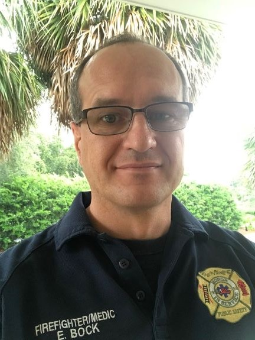

About Me
Ed has been programming computers off and on since the age of thirteen. He has done many things in his adult career. While currently a Firefighter/Paramedic in Central Florida he has decided to return to his IT roots as a Fullstack Web Development Application Developer. He is currently enrolled in the University of Central Florida's Web Development Bootcamp with an expected graduation of February, 2019.
He does not love speaking about himself in the third person.
In addition to being a FF/PM, his diverse career roles include HRIS Systems Analyst, Bank Manager, Account Manager, Pastor, and Director of Business and Finance. In other words, he was all over the map for a time.
In college he studied Industrial/Systems Engineering and Computer Science, ultimately receiving a BBA in Finance from Ohio University in preparation for a MA in Theological Studies from Reformed Theological Studies.